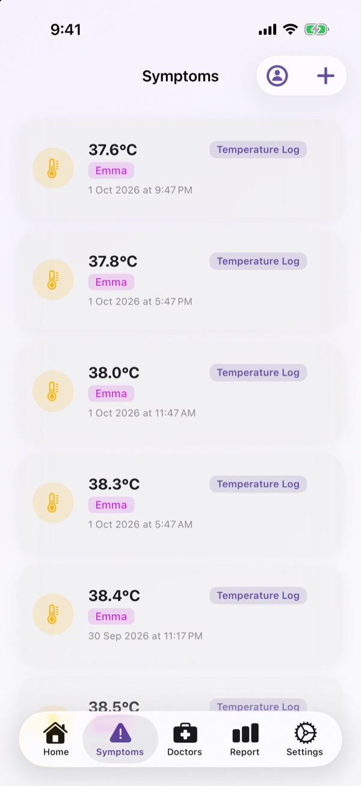

Nenhuma dose esquecida — nem repetida.
Acompanhe os medicamentos, febres e consultas dos seus filhos num app tranquilo — sincronizado ao vivo entre pais, cuidadores e creche.
- Download gratuito
- Sem anúncios, nunca
- Nunca vendemos seus dados
- Bloqueio com Face ID ou digital
- 10 idiomas
Chega de doses duplas às 3 da manhã.
Cansado e sem saber se já está na hora? O Parenty avisa quando ainda é cedo para a próxima dose e mostra exatamente quando ela deve ser dada.
- Lembretes a cada poucas horas, em horários fixos ou como alarmes sonoros
- Um aviso antes de uma dose cedo demais
- Atrasados, em andamento e concluídos — num relance

“Alguém já deu o remédio para ela?”
Nunca mais pergunte. Cada dose que alguém registra aparece na hora em todos os celulares da família — com quem deu e quando.
- Convide seu parceiro, os avós ou a babá pelo @usuário
- Veja no histórico quem deu cada dose
- O celular de todos atualiza na hora
O backup na nuvem é grátis para todos. Compartilhar com a família faz parte do Premium.

Bebê no colo? É só pedir.
Registre uma dose ou a febre sem desbloquear o celular nem abrir o app. Fale com a Siri no iPhone ou com seu assistente no Android, e o Parenty compartilha com a família.
- “Registrar Ibuprofeno no Parenty”
- “Qual remédio é o próximo no Parenty?”
- Registre febre, peso e altura, e confira a última dose
A Siri funciona sem configurar nada. No Android, funciona com assistentes compatíveis com ações de apps no Android 16 ou superior.
Tudo em um lugar tranquilo
Feito para pais cansados: grande, claro e rápido de usar, de dia ou de noite.
Febre e sintomas
Registre temperaturas em °C ou °F e sintomas numa escala de 1 a 5, com notas e horários.
Crescimento & gráficos
Peso e altura de cada criança, com as curvas de crescimento da OMS.
Médicos e consultas
Seu pediatra a um toque. Registre consultas e retornos e adicione-os à sua agenda.
Relatórios em PDF e CSV
Compartilhe um resumo claro de doses, temperaturas, sintomas e consultas com o médico ou no pronto-socorro.
Cada criança
Perfis com cores para cada criança e filtros por data, criança ou quem registou cada entrada.
Widgets e iPad
Registe uma dose no ecrã inicial, acompanhe a contagem no ecrã bloqueado ou use a barra lateral no iPad.
Veja o Parenty em ação
Claro ou escuro, ele acompanha seu celular.



Mantenha-se ligado também à creche.
Convide a creche, ama ou avós para as crianças e datas que escolher. Eles registam doses, refeições e sestas e você vê o dia em tempo real — enquanto os seus dados privados continuam privados.
“I looked through many medicine tracking apps for something that had a really clear note about when the medicine was last taken and when it was due again. After trying close to 20, I found Parenty and it's been almost exactly what I've been looking for. The developer is also extremely open to feedback and quick to address.”
Grátis para começar. Premium para compartilhar.
Tudo o que precisa para uma criança é grátis. Faça upgrade para partilhar em tempo real com família e creche.
Grátis
Grátis para sempre
- Agendas de remédios, lembretes e checagem de doses
- Registros de temperatura e sintomas
- 1 perfil de criança
- 1 médico e 2 consultas
- Backup na nuvem nos seus próprios aparelhos
Premium
Mensal ou uma compra única vitalícia
- Tudo do Grátis
- Compartilhe com parceiro, família e cuidadores — sincronização ao vivo
- Crianças, médicos e consultas ilimitados
- Relatórios em PDF e gráficos de febre
- Configurações de alarme
- Convide sua creche e veja o dia
O app mostra os preços na sua moeda local.
Dúvidas e suporte
Como funciona a sincronização entre pais e cuidadores?
Toda conta conectada tem backup gratuito na nuvem, então seus dados sobrevivem a um celular novo e ficam atualizados em todos os seus aparelhos. Com o Premium você pode convidar seu parceiro, os avós ou a babá pelo @usuário deles, e cada dose que registram aparece na hora no celular de todos.
O que está incluído de graça?
Controle de remédios e doses, lembretes, registros de temperatura e sintomas, um perfil de criança, um médico com duas consultas e backup na nuvem. O Premium acrescenta compartilhamento com a família, perfis e médicos ilimitados, relatórios em PDF, gráficos de febre e configurações de alarme.
Posso cuidar de várias crianças?
Sim. Cada criança tem seu próprio perfil colorido, e você pode filtrar remédios, temperaturas, sintomas e consultas por criança. O plano grátis inclui um perfil de criança; o Premium libera perfis ilimitados.
Minha creche ou babá pode usar o Parenty?
Sim. Com Premium convida a creche ou cuidador por nome de utilizador ou código QR, escolhe que crianças veem e durante quanto tempo, e acompanha doses, refeições e sestas ao vivo no Início. Nunca veem os seus registos ou notas privadas.
Posso usar o Parenty com a Siri ou meu assistente do Android?
Sim. No iPhone, diga à Siri frases como “Registrar Ibuprofeno no Parenty” ou “Qual remédio é o próximo no Parenty?”, sem configurar nada. No Android 16 ou superior, assistentes compatíveis com ações de apps podem registrar doses, temperaturas, peso e altura e conferir o que vem a seguir. O Parenty continua avisando sobre uma dose cedo demais, e tudo é compartilhado com sua família como sempre.
Como excluo minha conta?
Vá em Configurações do perfil e escolha Excluir conta. Sua conta e os dados dela na nuvem são removidos.
Ainda precisa de ajuda? Escreva para info@parenty.uk
Cuidado com calma, até às 3 da manhã.
Download gratuito para iPhone e Android.